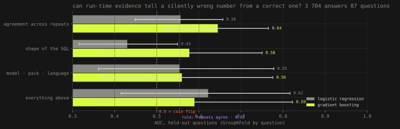
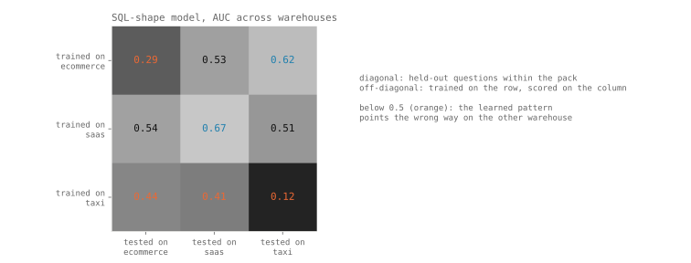

Research · companion to Quaesitor · AI answers over data warehouses, 2026
Can a wrong number be seen coming?
On 87 held-out questions, run-time signals barely separate an AI assistant's silently wrong numbers from correct ones; the best of eight models, selected after the fact, reaches an AUC of 0.64 (95 % CI 0.51–0.77).
- answers
- 5 794 3 839 silently wrong · administrative count
- trained on
- 3 704 87 questions · 81.8 % silently wrong · administrative count
- best held-out AUC
- 0.64 95 % CI 0.51–0.77 · selection-biased · 0.5 is chance
- self-consistency
- 21 % correct when all repeats agree · 95 % CI 9–35 % · base rate 18 %
Overwhelmed? Here's the short version
- Used as a filter, the best model forwards 3.4 % of answers; every other answer still needs a cross-check.
- Only one of eight combinations beats chance, and it was chosen after the fact.
- Agreement across repeated runs does not make an answer measurably more likely to be correct.
- What an answer's SQL looks like does not carry over from one warehouse to another.
- The analysis is exploratory, and the traps are planted, not production questions.
Photo: Holly's Coastal View · CC0, toned
Run-time signals of silent failure
An assistant that answers business questions with SQL can fail silently: the query runs and returns a plausible number that is wrong. Quaesitor measured how often this happens by planting known traps in synthetic warehouses and asking questions whose true answer is known1. Checking every figure against a verified source is expensive, so a signal available at run time that flags the likely wrong numbers would let the check be reserved for them. Several such signals have been proposed for language models in general. Self-consistency trusts the answer that most samples agree on2, models can be asked to estimate the probability that their own answer is correct3, and semantic entropy measures disagreement between sampled answers in meaning rather than in wording4. Selective classification frames the use of any such score as a trade-off between the share of cases answered and the error among them5. Text-to-SQL benchmarks such as BIRD and Spider 2.0 report execution accuracy on realistic databases but not whether the errors can be predicted6, 7. This text asks whether agreement across repeats, the shape of the SQL and the circumstances of the run predict which numeric answers are silently wrong, on held-out questions. Its contribution is a mostly negative result for this setting, with the size of the one signal that does exist.
Data
The data are the 125 run reports of the Quaesitor harness, committed between 20 and 25 August 2026. The harness plants the reasons for silent failure in a warehouse (duplicated rows from a slowly changing dimension, soft deletes, mixed currencies, a timezone, a wrong denominator) and asks each question three times, in fifteen languages, of several models. Of 5 794 answers, 885 were correct, 3 839 silently wrong, 485 refused, 458 implausible, 87 invalid SQL, 31 without a figure and 9 unmeasured. The silent-failure rate ranges from 56 % to 92 % across packs and model configurations1, 8.
Of the 3 704 numeric answers used for training, 3 698 came from Claude models called through the Claude Code command-line client under the aliases opus and sonnet, in eight configurations, and 6 from a local Llama 3.1 model (per-answer file, private; not verifiable). The harness sets neither a sampling temperature nor a seed, so the client's default applied and was not recorded. Agreement between repeats depends on that temperature, and at a temperature of zero it would be close to trivial. Training excludes the abstention pack and two packs with fewer than 100 numeric answers, which leaves five packs and 87 questions8.
How this was done
The unit is one numeric answer, one repeat of one question, and the label is silently wrong against correct; implausible answers are a separate class and are not trained on. A detector may use only what exists at run time. The first feature set is agreement across the three repeats: how many distinct SQL statements and distinct numbers came back, whether this answer is the majority value and whether all repeats agree. The second is the shape of the SQL: its length, joins, tables, WHERE terms, boolean flag filters, DISTINCT, GROUP BY, date arithmetic, casts and coalesces, subqueries and NULL checks. The third is the run: the model alias, the pack and the language. A fourth set combines all three. The type of trap planted in a question never enters a model8.
Each feature set is fitted with a logistic regression and with gradient boosting, eight combinations in all, and scored by the area under the ROC curve on held-out questions. Cross-validation uses five folds grouped by question, so all fifteen languages of a question are held out together and a model cannot learn which question carries which trap. The best of the eight is selected after seeing all eight scores, without nested cross-validation, so its AUC is an optimistic estimate. The intervals come from a bootstrap over questions9: the 87 questions are the clusters, and each of 2 000 resamples draws 87 of them with replacement and recomputes every AUC on the held-out predictions. The models are not refitted in each resample, so an interval covers which questions happened to be asked but not the variability of fitting, and it is if anything too narrow. The effective sample of every AUC on this page is therefore 87 questions, not 3 704 answers, and within one pack it is 9 to 26. An AUC is read as above or below chance only when its 95 % interval excludes 0.5; otherwise it is read as indistinguishable from chance. Refitted from the published answers, all eight AUCs, the agreement rule and the nine transfer AUCs match detector.json exactly8.
The tests
| features | model | AUC | 95 % CI | forwarded | correct among forwarded | share of correct caught | AP, correct | Brier |
|---|---|---|---|---|---|---|---|---|
| agreement | logistic | 0.56 | 0.45–0.66 | 0.2 % | 67 % | 0.6 % | 0.20 | 0.148 |
| agreement | boosting | 0.64 | 0.51–0.77 | 3.4 % | 86 % | 16 % | 0.34 | 0.134 |
| SQL shape | logistic | 0.43 | 0.32–0.55 | 1.4 % | 12 % | 0.9 % | 0.15 | 0.173 |
| SQL shape | boosting | 0.58 | 0.37–0.75 | 10.5 % | 42 % | 24 % | 0.34 | 0.159 |
| run | logistic | 0.55 | 0.36–0.78 | 0.9 % | 12 % | 0.6 % | 0.25 | 0.150 |
| run | boosting | 0.56 | 0.37–0.78 | 2.1 % | 35 % | 4.0 % | 0.25 | 0.150 |
| all | logistic | 0.62 | 0.42–0.82 | 10.0 % | 47 % | 26 % | 0.33 | 0.151 |
| all | boosting | 0.59 | 0.35–0.82 | 12.4 % | 53 % | 36 % | 0.37 | 0.145 |
| rule: all repeats agree | none | 0.55 | 0.41–0.66 | 60 % | 21 % | 69 % | – | – |
Base rate of correct answers 18 %, so an uninformative score has an average precision for correct answers of about 0.18 and a Brier score of 0.149. Intervals: percentile, 2 000 resamples of the 87 questions, held-out predictions fixed; only the AUC carries one here, and the filter of the selected model is given with intervals in the text. Source: detector.json; intervals auc.json, both rebuilt from answers.csv.
Agreement across repeats

The highest held-out AUC, 0.64 (95 % CI 0.51–0.77), comes from gradient boosting on the agreement features. It is the maximum over eight combinations, chosen after seeing all eight, and therefore optimistic: in the bootstrap it ranks first in 43 % of resamples, and the logistic regression on all features ranks first in 21 %. Its interval is the only one of the eight that excludes 0.5. The other seven lie between 0.43 and 0.62, and all their intervals include 0.5 (fig. 1). The logistic regression on the shape of the SQL, at 0.43 (0.32–0.55), is therefore indistinguishable from chance rather than evidence that the shapes of wrong answers reverse between questions. The run features, model, pack and language, score 0.55 and 0.56 with intervals from 0.36 to 0.78, which neither shows that the wrong answers are spread evenly over models and languages nor that they are concentrated in one8.
Used as a filter at a 50 % threshold, the best model forwards 3.4 % of answers (95 % CI 0.0–11 %), 86 % of them correct (67–87 %), and catches 16 % of all correct answers (0–44 %); against a base rate of 18 %, that lane is about 4.7 times richer in correct numbers than the pool. Of the 126 answers it forwards, 120 are repeats of one e-commerce question (Q09) and the other 6 of one benchmark question, which is why the intervals are wide and lopsided: a resample that leaves out those two questions forwards nothing. Its average precision for correct answers is 0.34 against the 0.18 of an uninformative score, and its Brier score is 0.134 against 0.149. A high-confidence lane of this size could skip the cross-check for about one answer in thirty, at a cost of one wrong number in seven among those skipped, while every other answer would still need checking, and since the lane rests on two questions it may not recur on new ones8.
When all three repeats return the same number, that number is correct 21 % of the time (95 % CI 9–35 %) against the base rate of 18 % (9–28 %). The paired difference, 2.7 pp (−4.6 to 9.2 pp), is indistinguishable from zero, so self-consistency on its own adds little, and when the three repeats wrote three different SQL statements and still agreed on the number, it is correct 20 % of the time (8–35 %). The run reports show the models repeating the same mistake, such as ignoring the duplicated dimension rows or counting soft-deleted rows on every attempt, but the share of agreeing answers that fail on each trap type is not computed in the published output, so this mechanism is described, not measured1, 8.
SQL shape across warehouses

Trained on the e-commerce warehouse, the SQL-shape model scores 0.53 on the SaaS warehouse (95 % CI 0.37–0.68) and 0.62 on the taxi one (0.13–1.00); trained on taxi, it scores 0.41 on SaaS (0.26–0.71) and 0.44 on e-commerce (0.22–0.68) (fig. 2). All six transfer intervals include 0.5, and those scored on SaaS or taxi, with 9 and 10 questions, span most of the scale. What the model can learn is what the traps of a particular warehouse look like, and a detector deployed on new questions in a new warehouse would not have that to go on. Within a pack, held-out questions score 0.29 on e-commerce (0.10–0.52), 0.67 on SaaS (0.34–0.90) and 0.12 on taxi (0.00–0.36). The e-commerce interval includes 0.5, so that value is read as noise. The taxi interval lies wholly below 0.5, so the within-taxi model is anti-predictive, which is a known artefact of leave-group-out cross-validation with few groups: holding out a question shifts the class balance of the training folds the other way, and a model that learns that balance ranks the held-out question backwards. With 10 taxi questions, each fold holds out two, so the taxi value is treated as an artefact of the design, not as a finding about taxi SQL8.
Robustness
| pack | numeric answers | questions | silently wrong | within-pack AUC | 95 % CI | reading |
|---|---|---|---|---|---|---|
| e-commerce | 2 377 | 26 | 88 % | 0.29 | 0.10–0.52 | noise |
| SaaS | 651 | 9 | 63 % | 0.67 | 0.34–0.90 | noise |
| taxi | 459 | 10 | 79 % | 0.12 | 0.00–0.36 | anti-predictive |
| benchmark v0 | 111 | 23 | 88 % | too small | – | – |
| medallion | 106 | 19 | 56 % | too small | – | – |
Within-pack AUC is computed only for packs with at least 150 numeric answers; its 95 % CI is a bootstrap over the pack's questions. Noise: the interval includes 0.5; anti-predictive: it lies below 0.5. Excluded from training: abstention, benchmark bronze v0, TPC-DS. Source: detector.json; intervals auc.json.
What changed during the analysis
- 15 September 2026: the abstention pack was excluded after first results. Its correct response is to decline, so every numeric answer in it is wrong by construction and "returned a number" becomes the label; with the pack included the SQL-shape model scored 0.81, and without it 0.58.
- 15 September 2026: two packs with fewer than 100 numeric answers (benchmark bronze v0 and TPC-DS) were excluded.
- 29 September 2026: question-level bootstrap intervals and the rule for reading them (above or below chance only when the 95 % interval excludes 0.5) were added after all point estimates had been published.
What this means
What is measured is that, on 87 questions with planted traps, the best of eight run-time scores separates silently wrong numbers from correct ones with a held-out AUC of 0.64 (95 % CI 0.51–0.77), and that its high-confidence lane forwards 3.4 % of answers, 86 % of them correct (67–87 %), almost all of them repeats of one question. That a similar lane would appear on new questions or in another warehouse is not measured, and the transfer intervals, all of which include 0.5, give no support for it. For a system that cross-checks figures against a catalogue of verified ones, such as the trust layer the author runs at work (private; not verifiable), these results do not support replacing the check with a run-time score; at most they support a narrow lane of answers that skip it, whose error rate would have to be measured on that system's own questions and be acceptable to its users1, 8.
What this does not show
The answers come from one harness with planted traps, not from production questions, and production errors may be easier or harder to predict. The features are written by hand from the SQL text; an embedding of the query might score higher, although the transfer result suggests it would also learn the warehouse. The label is binary, so a 6 % miss and a 2 000 % miss count alike. The sampling temperature of the repeats is unknown, almost all training answers come from Claude configurations, and none of the uncertainty-based signals in the literature, such as semantic entropy or self-reported confidence, were tested. The analysis is exploratory, and the best result was selected from eight: its interval, the only one that excludes 0.5, has a lower bound of 0.51 and accounts neither for the selection nor for refitting the models. The intervals treat the 87 questions as a sample from a wider population of questions, although they were written with planted traps and were not drawn at random. Whether a silently wrong number leaves a trace that recurs across new questions is therefore open, and the one lane that looks useful rests on two questions8.
Reproduction
The 3 704 parsed answers with their run-time features are published as answers.csv. tools/detector/auc.py in the site repository refits the eight combinations, the agreement rule and the transfer matrix from that file with scikit-learn 1.9.1, checks every AUC against detector.json, draws the question-level bootstrap and writes auc.json; uv run --with scikit-learn==1.9.1 --with pandas==3.0.5 --with numpy==2.5.1 python tools/detector/auc.py takes about a minute and a half. tools/charts/silent_detector.py and tools/figures/detector_figures.py draw the two figures from those files. The parser, method/src/detector.py in the private quaesitor repository at commit b99c89e with tests in tests/test_detector.py, and the 125 run reports it reads remain private, so the step from a run report to a row of answers.csv cannot be checked by a reader.
References
- Šandová, B. (2026). Quaesitor, the three texts: the harness, the packs and the classification of answers (correct, silently wrong, implausible, refused). Runs: quaesitor repository,
method/outputs/agent_*.md, 125 reports (private; not verifiable). - Wang, X., Wei, J., Schuurmans, D. et al. (2023). Self-consistency improves chain of thought reasoning in language models. ICLR 2023. arXiv:2203.11171. Accessed 29 September 2026.
- Kadavath, S., Conerly, T., Askell, A. et al. (2022). Language models (mostly) know what they know. arXiv:2207.05221. Accessed 29 September 2026.
- Farquhar, S., Kossen, J., Kuhn, L. and Gal, Y. (2024). Detecting hallucinations in large language models using semantic entropy. Nature 630, 625–630. doi:10.1038/s41586-024-07421-0. Accessed 29 September 2026.
- Geifman, Y. and El-Yaniv, R. (2017). Selective classification for deep neural networks. NeurIPS 2017. arXiv:1705.08500. Accessed 29 September 2026.
- Li, J., Hui, B. et al. (2023). Can LLM already serve as a database interface? A big bench for large-scale database grounded text-to-SQLs (BIRD). NeurIPS 2023. arXiv:2305.03111. Accessed 29 September 2026.
- Lei, F., Chen, J. et al. (2024). Spider 2.0: evaluating language models on real-world enterprise text-to-SQL workflows. arXiv:2411.07763. Accessed 29 September 2026.
- Šandová, B. (2026).
method/src/detector.py, quaesitor repository, commitb99c89e(private; not verifiable): parser over the run reports, run-time features, GroupKFold by question, pack-to-pack transfer; tests intests/test_detector.py. Public: its output detector.json and the parsed answers answers.csv, refitted with intervals bytools/detector/auc.pyin the site repository (scikit-learn 1.9.1) into auc.json. - Field, C. A. and Welsh, A. H. (2007). Bootstrapping clustered data. Journal of the Royal Statistical Society: Series B 69(3), 369–390. doi:10.1111/j.1467-9868.2007.00593.x. Accessed 29 September 2026.
Change log
- 15 September 2026: first published.
- 29 September 2026, version 2: moved from "Claims, checked" to research, marked exploratory, and restructured to the research standard, with a question and contribution against six external references, a data section, the design, a table of all eight combinations, a robustness table, the post-hoc exclusions as a dated list, limitations and reproduction. The deck is one sentence and 0.64 is reported as the best of eight, selection-biased. The filter result is reported with its recall and lift (3.4 % forwarded, 86 % correct, 16 % of correct answers caught, about 4.7 times the base rate) instead of "it keeps almost nothing"; the "3 %" of version 1 is given as 3.4 %, from detector.json. Added from detector.json: the outcome breakdown, the per-pack counts, question counts and within-pack AUC for SaaS (0.67), average precision and Brier scores, the eight-row results table and the agreement rule's forwarded share and recall. Added from the repository: the run-report dates (20–25 August 2026), the models and the absence of a set temperature or seed, the code commit and command. The within-pack AUCs of 0.29 and 0.12 are now treated as an artefact of few questions per fold. Removed the claim that a silently wrong number leaves no trace, the "three percentage points at three times the cost" line, the closing morals, the tie-in to the Quaesitor headline, the ".stack" line with its test counts (4 new tests, 732 in the repository) and the link to the retired engineering page. The repository is marked private; question-level bootstrap intervals were not computed because the per-answer data are not public, and this is stated as a limitation.
- 29 September 2026, editorial check: the run reports were committed 20–25 August 2026, not through 15 September (the date of the detector commit); the training answers from Claude models are 3 698 in eight configurations, not 3 575 in six, which counted only configurations with at least 100 answers in detector.json; the other 6 answers came from a local Llama 3.1 model.
- Checked against editorial standard v1 on 29 September 2026.
- 29 September 2026, version 3: the parsed answers are published as answers.csv (3 704 rows, no personal data) with the analysis script
tools/detector/auc.py, which refits every AUC from them and matches detector.json exactly. Added question-level bootstrap 95 % intervals (2 000 resamples of the 87 questions) to every AUC: agreement 0.56 (0.45–0.66) and 0.64 (0.51–0.77), SQL shape 0.43 (0.32–0.55) and 0.58 (0.37–0.75), run 0.55 (0.36–0.78) and 0.56 (0.37–0.78), all features 0.62 (0.42–0.82) and 0.59 (0.35–0.82), the agreement rule 0.55 (0.41–0.66), the six transfers and the three within-pack AUCs, e-commerce 0.29 (0.10–0.52), SaaS 0.67 (0.34–0.90) and taxi 0.12 (0.00–0.36). Added intervals to the filter lane (3.4 %, 0.0–11 %; 86 %, 67–87 %; 16 %, 0–44 %), to self-consistency (21 %, 9–35 %; three different SQL statements 20 %, 8–35 %) and to the base rate (18 %, 9–28 %), and the paired difference of 2.7 pp (−4.6 to 9.2 pp). New from answers.csv: 120 of the 126 forwarded answers come from one e-commerce question, and the selected combination ranks first in 43 % of resamples. Readings changed with the intervals: the SQL-shape logistic regression (0.43) is indistinguishable from chance, not a reversal of patterns between questions; the run features no longer support "not concentrated in one model or one language"; the e-commerce within-pack 0.29 is noise and the taxi 0.12 anti-predictive. No point estimate changed. The static figures now show the intervals, and fig. 2 is drawn as intervals instead of a matrix. Added reference 9. The paragraph on systems that cross-check figures moved from the limitations into a new section, "What this means". Checked against editorial standard v1 again on 29 September 2026.